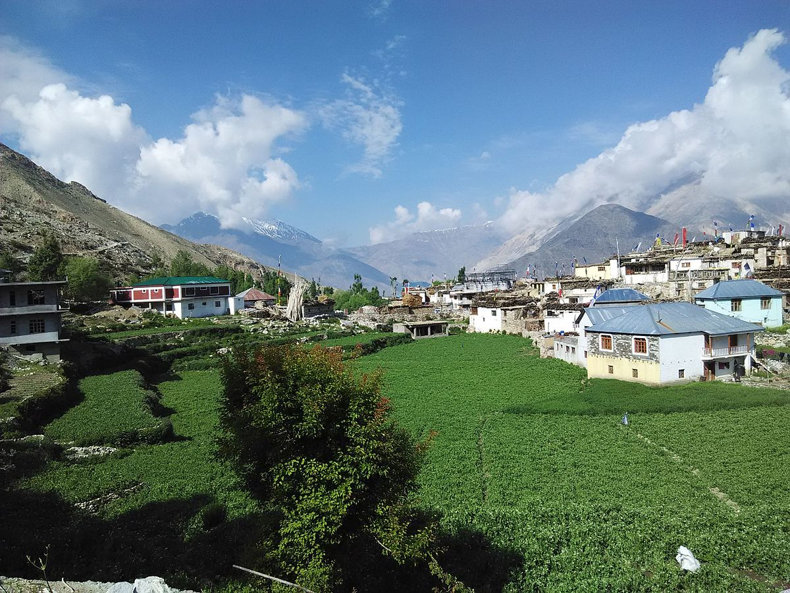
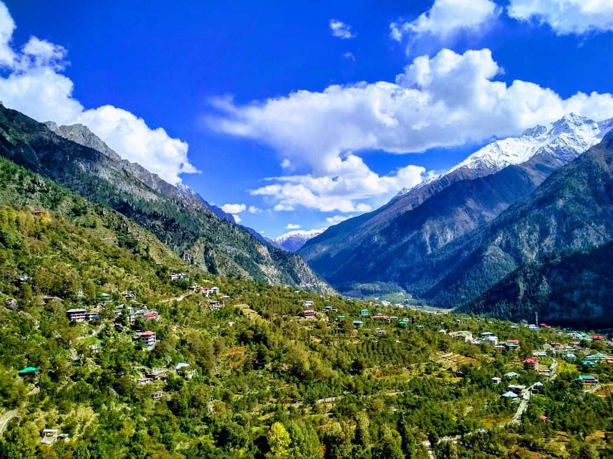

Places

Nako Village
Nako Village in Kinnaur is a hidden gem nestled in the Himalayas, renowned for its ancient monastery, stunning lake, and traditional architecture.

Kalpa
Kalpa in Kinnaur is a serene Himalayan village renowned for its panoramic views of snow-capped peaks, orchards laden with apples, and ancient monasteries.
Kinnaur Kailash Circuit Trek
The Kinnaur Kailash Circuit Trek in Kinnaur takes adventurers on a spiritual journey through rugged terrain and pristine landscapes

Chitkul
Chitkul in Kinnaur captivates with its pristine Himalayan charm, known as the last inhabited village near the Indo-China border, offering breathtaking landscapes.
Sarahan
Sarahan in Kinnaur captivates with its ancient Bhimakali Temple and stunning Himalayan vistas, making it a spiritual and scenic gem.
)